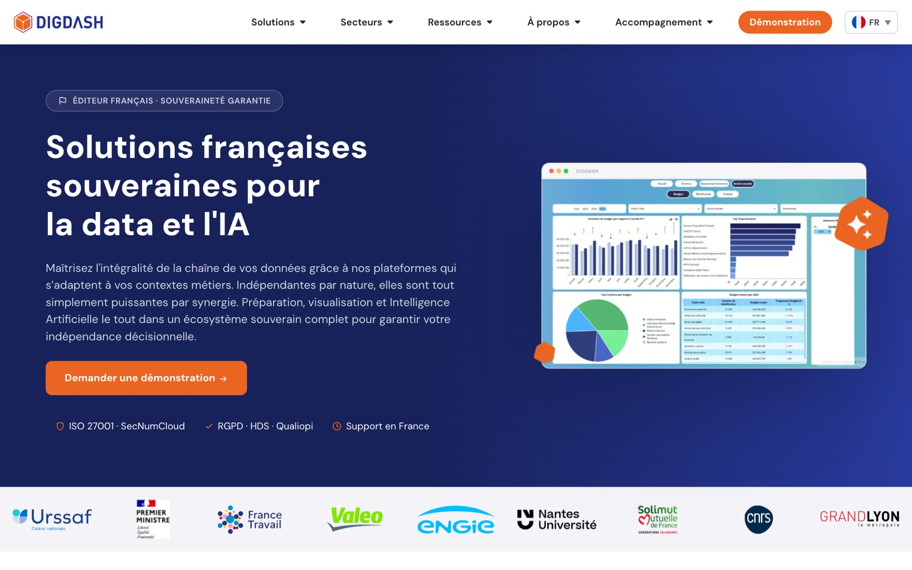

Observer
Repérer les niveaux de navigation, la place du contenu et les points de friction visibles.
Un site riche en contenus, mais une offre difficile à saisir. J’ai repensé son arborescence et son interface pour que l’on comprenne plus vite les produits, les usages et la prochaine action.
J’ai conçu l’architecture, les maquettes Figma, les composants destinés à l’intégration et l’identité des trois nouveaux produits. Un développeur WordPress a réalisé la mise en ligne.

L’ancien menu demandait au visiteur de deviner où se trouvait chaque sujet. « Solutions » mélangeait secteurs, produit, services, formation et cloud sur plusieurs niveaux.
Deux barres et des rubriques concurrentes compliquaient le balayage.
Cinq familles visibles : Solutions, Secteurs, Ressources, À propos et Accompagnement.
Regrouper par question du visiteur et rendre les destinations reconnaissables.
Principe appliqué : une hiérarchie cohérente et des libellés explicites réduisent l’effort nécessaire pour choisir un chemin.
Vue simplifiée des grandes entrées de navigation. Elle montre ce qui change de place et ce qui devient directement visible, sans représenter chaque page du site.
La première impression reposait sur une photographie d’ambiance. Elle ne disait rien de l’interface que DigDash vend.

Principe appliqué : la hiérarchie guide la lecture ; un aperçu réel du produit rend la promesse plus concrète.
Avec DataStack, BI et AI, DigDash ne présente plus une seule offre. J’ai créé une identité pour chacun des trois produits et conçu leur présentation commune.
La capture montre les identités dans le menu du site livré ; les planches de conception Figma pourront compléter cette étape.
Sur l’ancienne page, le nom du produit et son usage arrivaient après un grand bandeau photographique. La nouvelle page DigDash BI commence par la solution elle-même.

Principe appliqué : donner la priorité à l’information utile et distinguer l’action principale de l’action secondaire.
Les filtres clients passent de listes déroulantes à des catégories directement visibles.

Pourquoi : voir les choix disponibles évite d’ouvrir chaque menu pour découvrir les options.
Sur les ressources, la navigation et les documents sont rapprochés du haut de page.


Pourquoi : afficher plus tôt ce que le visiteur est venu consulter.
L’en-tête mobile passe de plusieurs icônes sans texte à une hiérarchie plus nette : marque, démonstration, langue et menu.


Principe appliqué : un libellé explicite aide à reconnaître l’action ; l’en-tête réserve la place aux priorités.
Le processus relie l’analyse de l’existant à des choix d’interface et à des composants exploitables par le développeur.
Repérer les niveaux de navigation, la place du contenu et les points de friction visibles.
Redéfinir l’arborescence autour des besoins du visiteur et de la nouvelle famille de produits.
Créer les identités DS, BI et AI, puis les maquettes et composants dans Figma.
Livrer les maquettes et les composants au développeur chargé de l’intégration WordPress.
Le site livré présente désormais trois offres identifiables, une navigation structurée et des pages où le produit apparaît plus tôt. Ces comparaisons illustrent les choix de conception ; elles ne prétendent pas mesurer un gain de conversion ou d’usage.
Quatre autres vues montrent comment les mêmes choix se prolongent sur les pages de découverte, de contenu et de recrutement.
Le contexte métier et l’action « Démonstration » apparaissent dès le premier écran.

Le service est formulé comme une aide concrète, avec une action de contact identifiable.

Les catégories sont visibles sans ouvrir de filtre, et les articles remontent dans la page.
L’offre d’emploi est accessible dès l’entrée, accompagnée d’une photo de l’équipe.